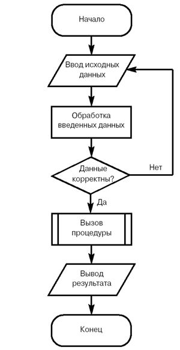

Методология процедурно-ориентированного программирования
Появление первых электронных вычислительных машин, или компьютеров, ознаменовало новый этап в развитии техники вычислений. Казалось, достаточно разработать последовательность элементарных действий, каждое из которых можно преобразовать в понятные компьютеру инструкции, и любая вычислительная задача будет решена. Эта идея оказалась настолько жизнеспособной, что долгое время доминировала над всем процессом разработки программ. Появились специализированные языки программирования, созданные для разработки программ, предназначенных для решения вычислительных задач. Примерами таких языков могут служить FOCAL (FOrmula CALculator) и FORTRAN (FORmula TRANslator).
Основой такой методологии разработки программ являлась процедурная, или алгоритмическая, организация структуры программного кода. Это было настолько естественно для решения вычислительных задач, что целесообразность такого подхода ни у кого не вызывала сомнений. Исходным в данной методологии было понятие алгоритма. Алгоритм - это способ решения вычислительных и других задач, точно описывающий определенную последовательность действий, которые необходимо выполнить для достижения заданной цели. Примерами алгоритмов являются хорошо известные правила нахождения корней квадратного уравнения или линейной системы уравнений.
При увеличении объемов программ для упрощения их разработки появилась необходимость разбивать большие задачи на подзадачи. В языках программирования возникло и закрепилось новое понятие процедуры. Использование процедур позволило разбивать большие задачи на подзадачи и таким образом упростило написание больших программ. Кроме того, процедурный подход позволил уменьшить объем программного кода за счет написания часто используемых кусков кода в виде процедур и их применения в различных частях программы.
Как и алгоритм, процедура представляет собой законченную последовательность действий или операций, направленных на решение отдельной задачи. В языках программирования появилась специальная синтаксическая конструкция, которая также получила название процедуры. Например, на языке Pascal описание процедуры выглядит следующим образом:
Procedure printGreeting(name: String)
Begin
Print("Hello, ");
PrintLn(name);
End;
Назначение данной процедуры - вывести на экран приветствие Hello, Name, где Name передается в процедуру в качестве входного параметра.
Со временем вычислительные задачи становились все сложнее, а значит, и решающие их программы увеличивались в размерах. Их разработка превратилась в серьезную проблему. Когда программа становится все больше, ее приходится разделять на все более мелкие фрагменты. Основой для такого разбиения как раз и стала процедурная декомпозиция, при которой отдельные части программы, или модули, представляли собой совокупность процедур для решения одной или нескольких задач. Одна из основных особенностей процедурного программирования заключается в том, что оно позволило создавать библиотеки подпрограмм (процедур), которые можно было бы использовать повторно в различных проектах или в рамках одного проекта. При процедурном подходе для визуального представления алгоритма выполнения программы применяется так называемая блок-схема. Соответствующая система графических обозначений была зафиксирована в ГОСТ 19.701-90. Пример блок-схемы из
ображен на рисунке (рис. 2.1).

Рис. 2.1.
Пример блок-схемы.
Появление и интенсивное использование условных операторов и оператора безусловного перехода стало предметом острых дискуссий среди специалистов по программированию. Дело в том, что бесконтрольное применение в программе оператора безусловного перехода goto может заметно осложнить понимание кода. Такие запутанные программы сравнивали с порцией спагетти (bowl of spaghetti), имея в виду многочисленные переходы от одного фрагмента программы к другому, или, что еще хуже, возврат от конечных операторов программы к начальным. Ситуация казалась настолько драматичной, что многие предлагали исключить оператор goto из языков программирования. Именно с этого времени отсутствие безусловных переходов стали считать хорошим стилем программирования.
Дальнейшее увеличение программных систем способствовало формированию новой точки зрения на процесс разработки программ и написания программных кодов, которая получила название методологии структурного программирования. Ее основой является процедурная декомпозиция предметной области решаемой задачи и организация отдельных модулей в виде совокупности процедур. В рамках этой методологии получило развитие нисходящее проектирование программ, или проектирование "сверху вниз". Пик популярности идей структурного программирования приходится на конец 70-х - начало 80-х годов.
В этот период основным показателем сложности разработки программ считался ее размер. Вполне серьезно обсуждались такие оценки сложности программ, как количество строк программного кода. Правда, при этом делались некоторые предположения относительно синтаксиса самих строк, которые должны были соответствовать определенным требованиям. Например, каждая строка кода должна была содержать не более одного оператора. Общая трудоемкость разработки программ оценивалась специальной единицей измерения - "человеко-месяц", или "человеко-год". А профессионализм программиста напрямую связывался с количеством строк программного кода, который он мог написать и отладить в течение, скажем, месяца.
Методология объектно-ориентированного программирования
Увеличение размеров программ приводило к необходимости привлечения большего числа программистов, что, в свою очередь, потребовало дополнительных ресурсов для организации их согласованной работы. В процессе разработки приложений заказчик зачастую изменял функциональные требования, что еще более усложняло процесс создания программного обеспечения.
Но не менее важными оказались качественные изменения, связанные со смещением акцента использования компьютеров. В эпоху "больших машин" основными потребителями программного обеспечения были такие крупные заказчики, как большие производственные предприятия, финансовые компании, государственные учреждения. Стоимость таких вычислительных устройств для небольших предприятий и организаций была слишком высока.
Позже появились персональные компьютеры, которые имели гораздо меньшую стоимость и были значительно компактнее. Это позволило широко использовать их в малом и среднем бизнесе. Основными задачами в этой области являются обработка данных и манипулирование ими, поэтому вычислительные и расчетно-алгоритмические задачи с появлением персональных компьютеров отошли на второй план. Как показала практика, традиционные методы процедурного программирования не способны справиться ни с нарастающей сложностью программ и их разработки, ни с необходимостью повышения их надежности. Во второй половине 80-х годов возникла настоятельная потребность в новой методологии программирования, которая была бы способна решить весь этот комплекс проблем. Ею стало объектно-ориентированное программирование (ООП).
После составления технического задания начинается этап проектирования, или дизайна, будущей системы. Объектно-ориентированный подход к проектированию основан на представлении предметной области задачи в виде множества моделей для независимой от языка разработки программной системы на основе ее прагматики.
Последний термин нуждается в пояснении. Прагматика определяется целью разработки программной системы, например, обслуживание клиентов банка, управление работой аэропорта, обслуживание чемпионата мира по футболу и т.п. В формулировке цели участвуют предметы и понятия реального мира, имеющие отношение к создаваемой системе (см. рисунок 2.2 [3]). При объектно-ориентированном подходе эти предметы и понятия заменяются моделями, т.е. определенными формальными конструкциями.
Рис. 2.2.
Семантика (смысл программы с точки зрения выполняющего ее компьютера) и прагматика (смысл программы с точки зрения ее пользователей) [3].
Модель содержит не все признаки и свойства представляемого ею предмета или понятия, а только те, которые существенны для разрабатываемой программной системы. Таким образом, модель "беднее", а следовательно, проще представляемого ею предмета или понятия.
Простота модели по отношению к реальному предмету позволяет сделать ее формальной. Благодаря такому характеру моделей при разработке можно четко выделить все зависимости и операции над ними в создаваемой программной системе. Это упрощает как разработку и изучение (анализ) моделей, так и их реализацию на компьютере.
Объектно-ориентированный подход помогает справиться с такими проблемами, как:
- уменьшение сложности программного обеспечения;
- повышение надежности программного обеспечения;
- обеспечение возможности модификации отдельных компонентов программного обеспечения без изменения остальных его компонентов;
- обеспечение возможности повторного использования отдельных компонентов программного обеспечения.
Более детально преимущества и недостатки объектно-ориентированного программирования будут рассмотрены в конце лекции, так как для их понимания необходимо знание основных понятий и положений ООП.
Систематическое применение объектно-ориентированного подхода позволяет разрабатывать хорошо структурированные, надежные в эксплуатации, достаточно просто модифицируемые программные системы. Этим объясняется интерес программистов к объектно-ориентированному подходу и объектно-ориентированным языкам программирования. ООП является одним из наиболее интенсивно развивающихся направлений теоретического и прикладного программирования.
|